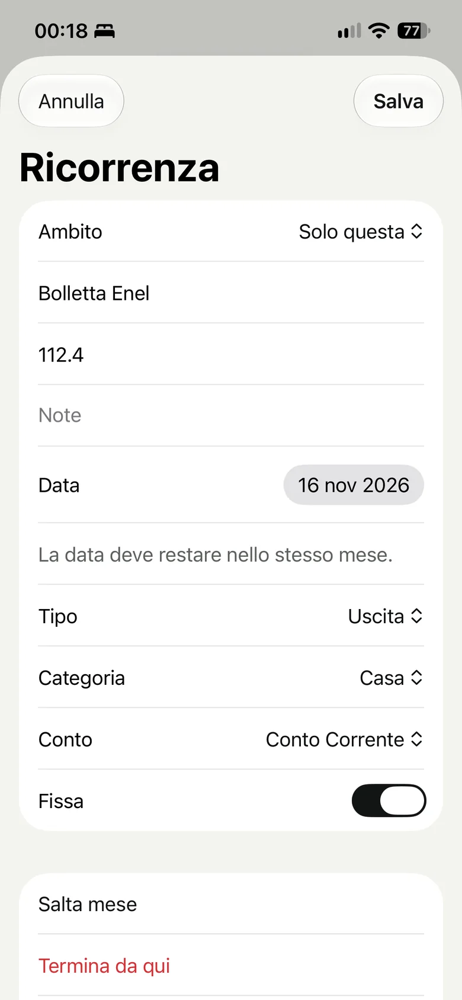
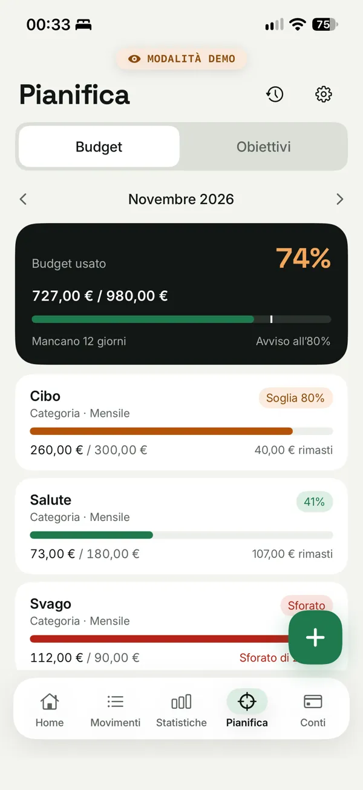
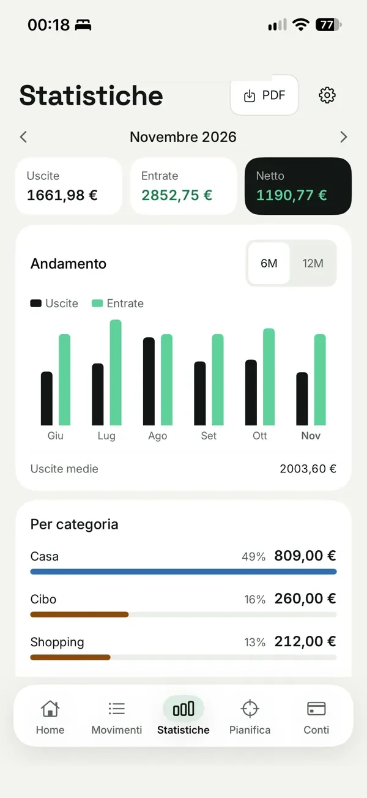

Il sentiero del saldo
Verde per quello che è già successo, ambra tratteggiato per quello che arriva entro fine mese. Capisci in un colpo d'occhio come finirà il mese.
In arrivo su iPhone e Android
Bucktrail tiene insieme spese, entrate, bollette e abbonamenti, e ti mostra già oggi come finirà il mese. Semplice, veloce, senza abbonamento.

Perché Bucktrail
Tre scelte precise, pensate per chi vuole tenere i conti senza perderci tempo.
Verde per quello che è già successo, ambra tratteggiato per quello che arriva entro fine mese. Capisci in un colpo d'occhio come finirà il mese.
Prezzo di lancio previsto: 4,99 €, una volta sola. Nessun abbonamento mensile, nessuna pubblicità.
Aggiungi spese ed entrate anche senza connessione. Sei tu a decidere quali conti collegare quando il collegamento bancario sarà disponibile.
Come funziona
Un’anteprima su iPhone, dalle schermate principali ai Comandi iOS.
01Home
Appena apri l'app vedi il saldo attuale e, sotto, la curva del mese: verde per quello che è già successo, ambra tratteggiata per la proiezione fino a fine mese.
02Movimenti
Spese, entrate e trasferimenti, giorno per giorno. In cima trovi quelli in arrivo, così sai già cosa uscirà dal conto.

03Aggiungi
Tocchi il pulsante +, scrivi nome e importo e salvi. Se hai già usato quel nome, la categoria si imposta da sola.

04Ricorrenze
Imposti una spesa o un'entrata che si ripete e Bucktrail la mette nei mesi successivi come pianificata. Tu devi solo confermarla.

05Pianifica
Dai un tetto a ogni categoria e metti da parte soldi per qualcosa di preciso. L'app ti avvisa quando ti avvicini al limite e quando lo superi.

06Statistiche
Il mese in tre numeri, l'andamento degli ultimi 6 o 12 mesi e le uscite divise per categoria.

07Conti
Conto corrente, risparmi, carte: ognuno con il suo saldo attuale e quello previsto. Decidi tu quali contano nel totale.

08Comandi iOS
Con l'azione «Aggiungi spesa» dell'app Comandi registri una spesa da un widget o con il tocco sul retro dell'iPhone.

Ogni funzione
Apri una schermata per vedere cosa fa ogni pulsante e ogni gesto.
Nasconde tutti gli importi (saldo, conti, riquadri) e li mostra come •••• €. La scelta resta salvata.
Apre le Impostazioni.
Porta alla scheda Conti.
Sceglie quali conti mostrare in Home e in che ordine.
Si apre e si chiude. Tocco su un movimento: lo modifichi. Scorri a sinistra: lo elimini.
Aggiunge un movimento. In Pianifica apre l'editor di budget e obiettivi.
Tutti · Fisse · Trasferimenti · Uscite · Entrate. «Ricorrenti» apre la pagina delle serie.
Questo mese, il precedente, il successivo, fino a 6 mesi avanti o indietro.
Mostra solo una categoria. Si combina con gli altri filtri.
Importo minimo e massimo, periodo personalizzato. Il numero sul pulsante dice quanti filtri sono attivi.
Conferma un movimento pianificato oppure lo rimette tra i pianificati.
Elimina, con conferma. Per un trasferimento elimina entrambe le parti.
Dall'importo passi al nome e con Fine salvi.
Sceglie il tipo di movimento.
Si compila da sola con l'ultima usata per lo stesso nome, oppure con le parole chiave. Puoi sempre cambiarla.
Acceso: il movimento è già avvenuto. Spento: è pianificato e compare tra quelli in arrivo.
Segna le spese che tornano ogni mese e le conta nei riquadri «Fissi del mese».
Crea la serie e il primo movimento con un solo salvataggio.
Da un conto a un altro: crea due movimenti collegati. Il pulsante dice «Trasferisci» o «Pianifica».
Cambi nome, importo, note o data di un solo mese.
Da qui in avanti la serie cambia, i mesi passati restano com'erano.
Modifica l'intera serie.
Quel mese il movimento non viene creato.
Chiude la serie nel punto che scegli.
Le occorrenze future si vedono come «escluse dai totali» finché non arrivano.
Un tetto in euro per categoria, su tutti i conti o su uno solo.
Il badge ambra dice che sei vicino al limite.
Il badge rosso dice che hai superato il limite.
I budget dei mesi precedenti, per confrontare.
Avvisi quando ti avvicini al limite o lo superi.
Nome con emoji, importo da raggiungere, importo attuale e scadenza facoltativa.
Mostra la percentuale raggiunta.
Le frecce cambiano il mese mostrato.
L'andamento di entrate e uscite negli ultimi 6 o 12 mesi.
Percentuale e importo di ogni categoria nel mese.
Crea il resoconto del mese da salvare o condividere.
Esporta i movimenti in un file da aprire con un foglio di calcolo.
Modifica il conto.
Elimina il conto.
Modifica, escludi o includi nel totale, archivia, elimina.
I conti archiviati stanno in una sezione a parte e si possono ripristinare.
Scrivi il saldo vero: l'app aggiunge una «rettifica saldo» per la differenza, senza toccare lo storico.
Euro, dollaro, sterlina, yen e altre: cambia ovunque nell'app.
Segue la lingua dell'iPhone, in 7 lingue.
Una notifica il primo giorno di ogni mese.
Una soglia per ogni conto.
Mostra o nasconde i riquadri delle spese e delle entrate fisse.
Blocca l'app all'apertura.
Un'azione dell'app Comandi: inserisci nome e importo e la spesa viene salvata senza aprire Bucktrail.
Come widget nella schermata Home o di blocco, oppure con il tocco posteriore dell'iPhone.
Funzioni in arrivo
Dopo il lancio
Importa automaticamente i movimenti dalle banche supportate. Scegli quali conti collegare e continua a gestire a mano gli altri.
Se hai già registrato una spesa simile, Bucktrail ti chiederà se è lo stesso movimento, così puoi evitare i doppioni.
Domande
Se non trovi la risposta, scrivici.
Il lancio è previsto su App Store per iPhone e su Google Play per Android. Iscriviti alla lista d’attesa per ricevere l’avviso all’uscita.
Prezzo di lancio previsto: 4,99 €, una volta sola. Nessun abbonamento e nessuna pubblicità.
Puoi gestire tutti i conti a mano. Il collegamento bancario è previsto dopo il lancio e sarà facoltativo per ogni conto.
Puoi registrare movimenti manuali anche offline. La sincronizzazione tra dispositivi e la futura importazione bancaria richiedono una connessione.
Il lancio è previsto su entrambi. Con lo stesso profilo potrai ritrovare conti, movimenti, budget e obiettivi dopo la sincronizzazione.
Italiano, inglese, spagnolo, francese, tedesco, cinese semplificato e giapponese. Segue la lingua del telefono.
Sì: conto corrente, risparmi, carte. Scegli tu quali contano nel totale.
I tuoi dati restano sul telefono. Su iPhone il database è protetto dalla cifratura dei file di iOS, con chiave legata al tuo codice: a telefono bloccato è illeggibile. Su Android sta nell’area privata dell’app, protetta dalla cifratura del sistema, e il backup automatico è disattivato. Puoi aggiungere il blocco con Face ID o Touch ID su iPhone, con impronta o volto su Android.
L’account è facoltativo. Se lo crei per sincronizzare iPhone e Android, i dati viaggiano in HTTPS e restano su Supabase, che li cifra a riposo. Ogni utente vede solo i propri dati, grazie a regole di accesso riga per riga. La sessione di accesso è custodita nel Keychain di iOS o nel Keystore di Android.
La sincronizzazione non usa la cifratura end-to-end: i dati sono cifrati, ma non con una chiave solo tua. Per questo l’account è facoltativo e, senza, tutto resta sul tuo telefono. L’app non contiene pubblicità né tracker.
Lista d’attesa
Lascia la tua email. Ti avvisiamo al lancio su iPhone e Android.